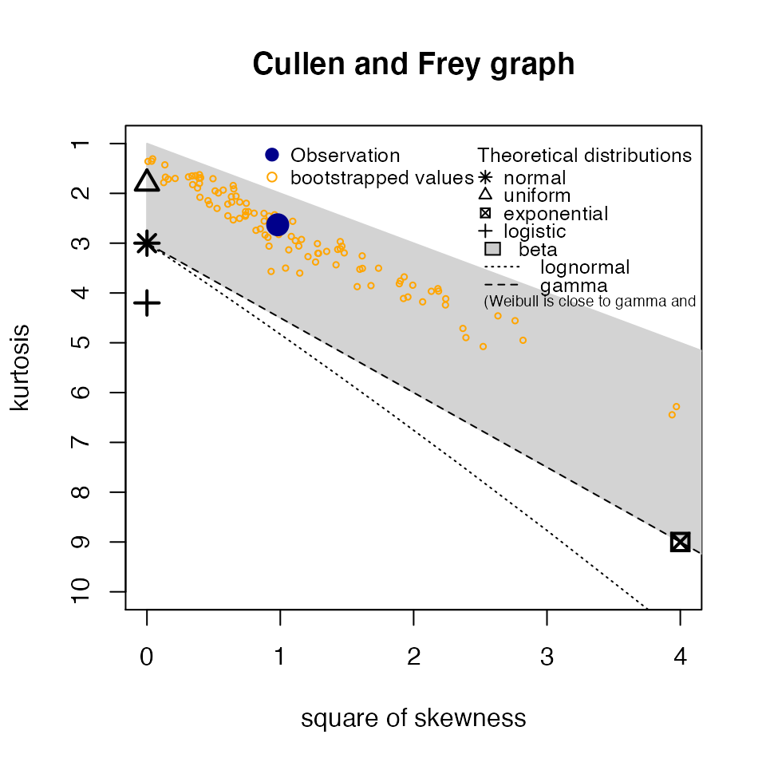
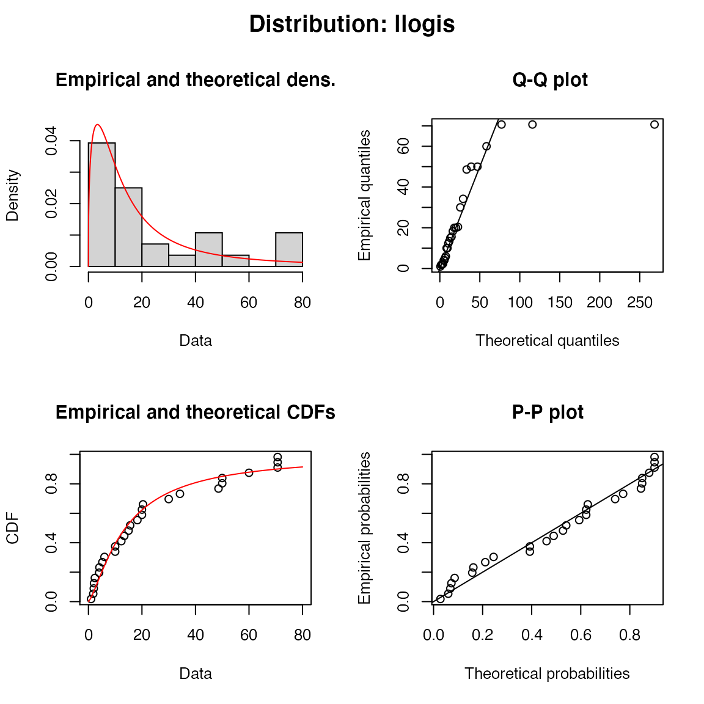
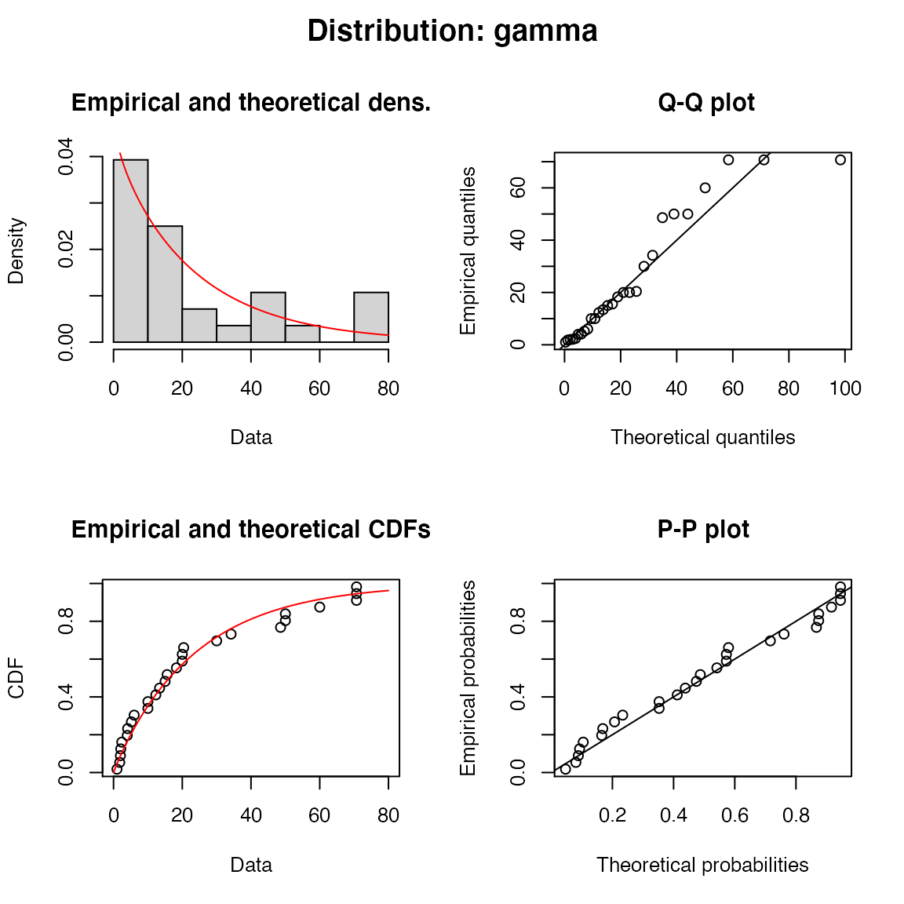

How do I fit a custom distribution?
The user can also specify one or more custom distributions (called say custom) provided vectorized density (dcustom()), distribution (pcustom()), quantile (qcustom()) and starting value (scustom()) functions are defined. For example see the llogis source code.
How do I fit distributions to multiple groups such taxa and/or chemicals?
An elegant approach using some tidyverse packages is demonstrated below.
library(purrr) library(tidyr) library(dplyr) boron_preds <- nest(ssdtools::boron_data, data = c(Chemical, Species, Conc, Units)) %>% mutate( Fit = map(data, ssd_fit_dists, dists = "lnorm"), Prediction = map(Fit, predict) ) %>% unnest(Prediction)
The resultant data and predictions can then be plotted as follows.
ssd_plot(boron_data, boron_preds, xlab = "Concentration (mg/L)", ci = FALSE) + facet_wrap(~Group)

How do I plot a Cullen Frey plot?
The data can be visualized using a Cullen Frey plot of the skewness and kurtosis.
set.seed(10) ssd_plot_cf(boron_data)

How do I plot model diagnostics?
A fitdists object can be plotted to display model diagnostics plots for each fit.
plot(boron_dists)
